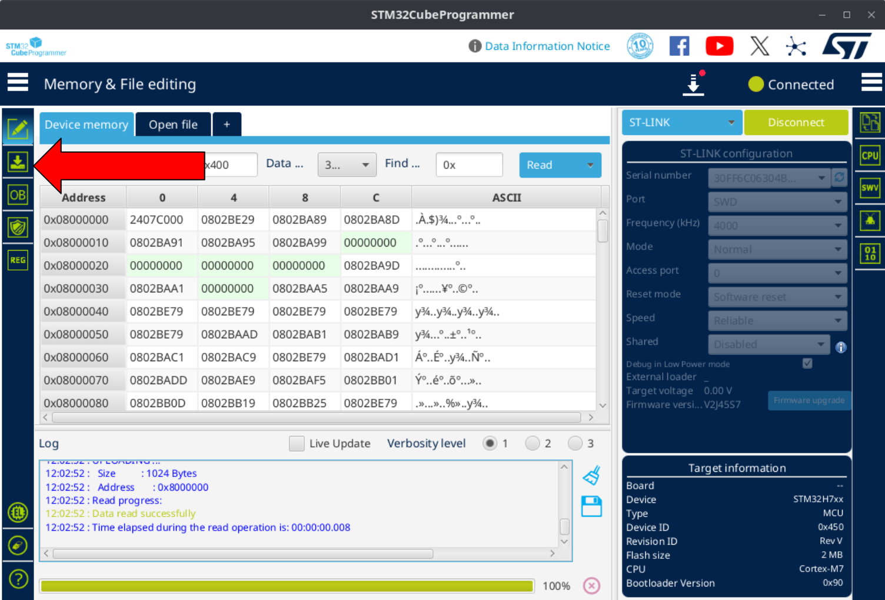

Building and Flashing the Firmware¶
This guide assumes you are running Ubuntu 22.04 LTS, which is the currently supported development environment.
Installing the ARM Embedded Toolchain¶
sudo apt install gcc-arm-none-eabi
You can test the installation and check which version is installed by running arm-none-eabi-gcc --version.
Building the Firmware from Source¶
- To build the firmware, first clone the firmware repository:
git clone --recursive https://github.com/rosflight/rosflight_firmware - Create build directory:
cd rosflight_firmware && mkdir build && cd build - Build using: (
board_nameshould be eithervarmintorpixracer_pro)cmake .. -DBOARD_TO_BUILD=<board_name> && make -j
Flashing firmware¶
Install STM32CubeProgrammer¶
We use the STM32CubeProgrammer to flash the flight controller.
- Download the programmer here. You may have to enter your email to download the software.
- Install the software by following the instructions in the downloaded package.
Flashing the Varmint¶
Needed tools
You will need an ST-Link STM programmer to flash the firmware. We use ST-Link V2, and you can find it on Mouser.
-
Plug the end of the ribbon cable into the 6-pin slot on the Varmint. You may have to make your own cable that connects the ST-Link to the 6-pin connector.
Danger
The Varmint has 2 6-pin connectors. Do not connect the ribbon cable to the port closest to the power wires.

-
Power on the Varmint by connecting a battery to the board.
-
Open STM32CubeProgrammer.
-
Plug in the USB connector from the ST-Link to the computer. Select "Connect" in the STM32CubeProgrammer. This should detect the ST-Link and connect automatically.

-
Navigate to the programming page. 
-
Select the hex file that was just built and click "Open".
/path/to/rosflight_firmware/build/boards/varmint_h7/varmint_10X/varmint10X.hex
-
Select the appropriate options and press "Start Programming"

{kind=link}
Flashing the Pixracer Pro¶
Flashing the Pixracer Pro is a very similar process to flashing the Varmint.
-
The Pixracer Pro does not use the same 6-pin connector to connect to the ST-Link. Instead, it uses a TC2030 connector with retaining clips.
Connectors we use
In addition to the ST-Link V2 board linked above, we use these cables to flash the Pixracer Pro:
- 20-pin ribbon adapter board (connect the ST-Link to this adapter)
- Programming cable that connects to the adapter board
- TC2030 clip to attach the programming cable to the board

-
Power on the Pixracer Pro using a USB-C port.
-
Follow the instructions from the Varmint flashing guide.